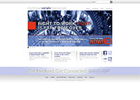

Over the years I have done many websites. Because of my job and consulting job usually being seperate in market that I targeted I have split them up into two categories:
I have worked on many sites in my political career. From canidates and senators individual sites, to lobby groups, and full sites for caucuses and parties. The two following sites are examples of the some of the political websites I have done:
Senate Democratic Caucus

Websites for businesses I have done come from my consulting. The following are a couple examples of those: